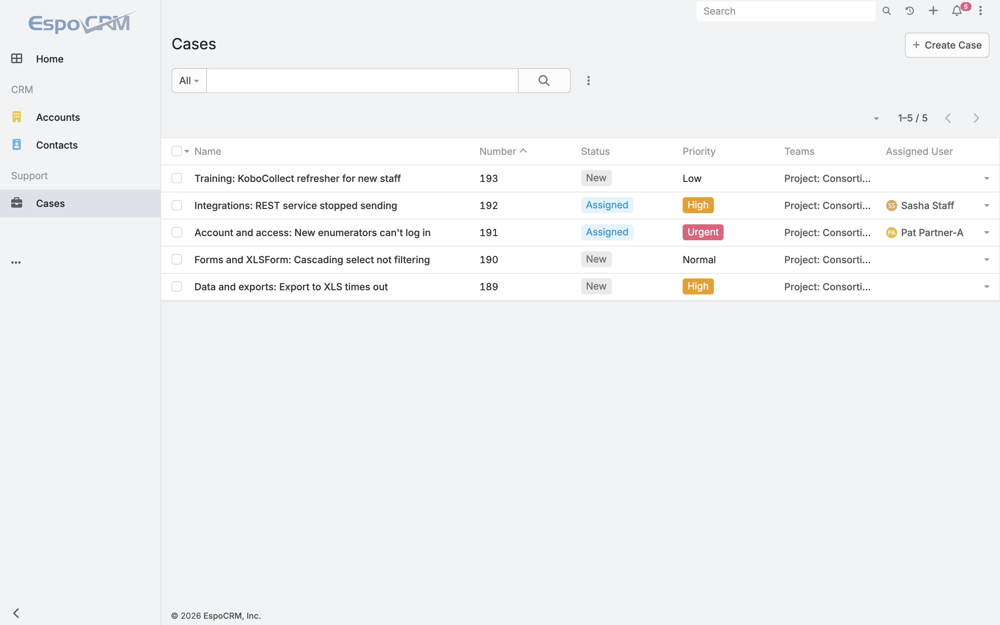
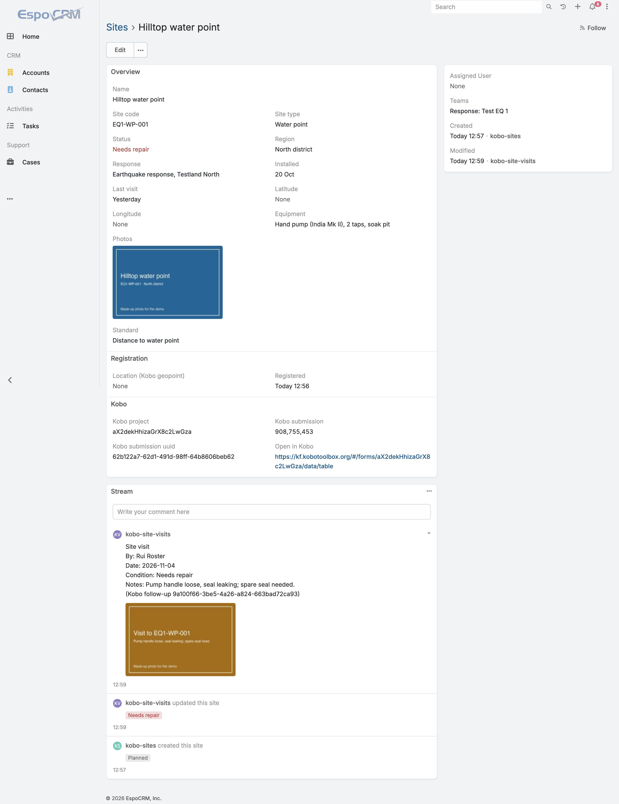
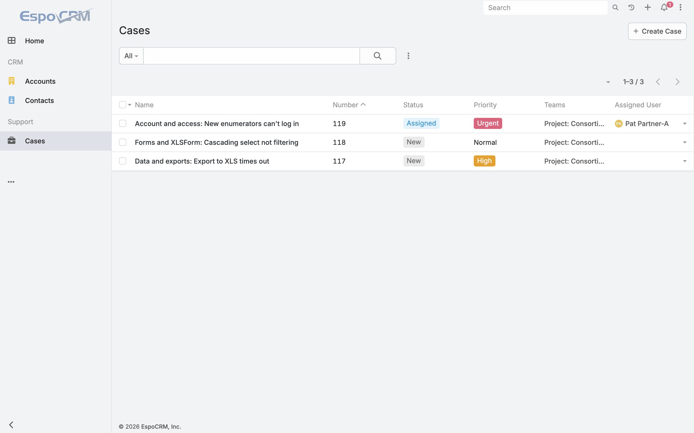
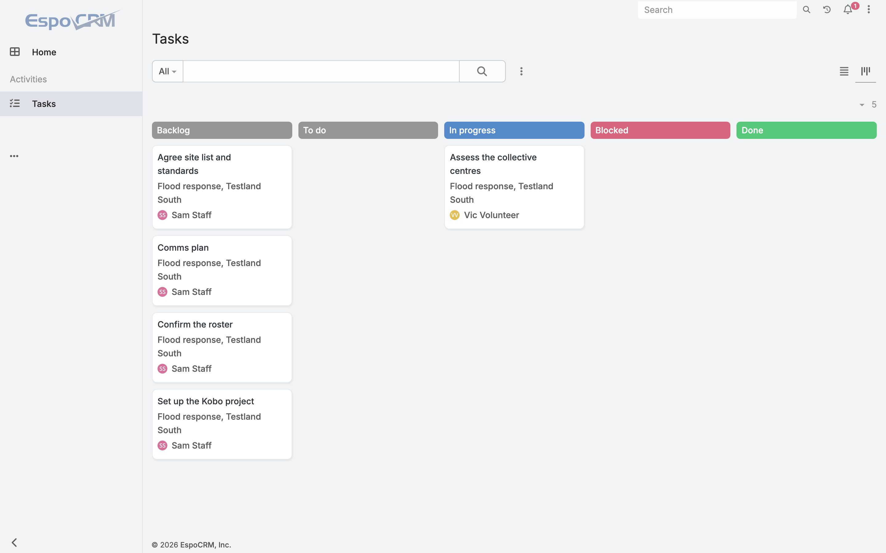

What it is
Three pieces, and two ways to do more with them:
- KoboToolbox, unchanged: the forms people already use, on the web or in KoboCollect.
- EspoCRM 10, open source, where staff, partners, roster experts and volunteers each see their own team's work. It has cases, contacts and accounts, and here also Responses, Sites and Standards, with a Kanban board for tasks.
- kobo-espo-bridge, a small program that connects them. It polls Kobo for new submissions and turns each one into a record. It keeps lists from EspoCRM on Kobo forms. And it applies follow-up visits to the records they're about. It was taken from Kobo in a box's case management and made general, so this test, the box and later connections share one tested bridge.
- The EspoCRM MCP, part of kobo-espo-bridge, for administrators: with it and kobo-mcp, Claude connects another Kobo form in one conversation, showing every change before it makes it. See Connecting a form.
- Agents, set up as records in EspoCRM: they screen grant applications and triage site visits, in dry run here. See Running it.
Nothing changes in KoboToolbox's settings: no REST services or webhooks to set up. After either side has been down, the bridge catches up by itself, and never makes a record twice.
The three workflows



A response with several clusters has a project for each, with its own team: see Cluster projects. Its 5W, on the Hurricane Melissa 5W form, is in EspoCRM too: organisations, activities and the communities they reached, with the follow-up of organisations that haven't reported (The 5W), and live dashboards of it on kobo-dash.
Another form can be connected the same way, as a contact, a case, a site or a new kind of record, in one conversation with Claude: see Connecting a form.
Who sees what
One instance, kept apart by teams (one per project, one per response) and roles (what each kind of person may do with their teams' records):
| Who | Role | Sees | Can |
|---|---|---|---|
| Kobo staff | Internal Staff | Everything of their teams: cases, responses, tasks, sites, contacts, accounts | Create, edit, assign within the team; no delete or export |
| Triager | Support Triager | Their projects' cases, requesters and organisations | Edit and assign cases to people in the case's team |
| Partner staff | Partner Staff | Their consortium's cases, contacts and accounts only | Work their consortium's cases |
| Roster experts | Roster Expert | Their responses: board, tasks, sites; the standards | Edit and move their own tasks, create tasks, comment |
| Volunteers | Volunteer | As roster experts | Move their own tasks and comment; no creating or reassigning |
| The bridge | One API user per form | What its form needs (e.g. cases, contacts, accounts for the support form) | Create records; never read users, never delete |
Volunteers and roster experts are ordinary EspoCRM users with restrictive roles, not portal users: EspoCRM doesn't let portal users be assigned work.




What was tested
On a throwaway EspoCRM 10.0.11 (espo-test.kobolabs.dev), with Kobo's production server and a test account, on 5 November 2026. Each check is a script in the repository; the results are in tests/results/.
| What | Checks | Result |
|---|---|---|
| Kobo → EspoCRM on real Kobo (T1–T7, T12; sites, lists and visits) | 72 | All passed |
| The same with a fake Kobo, including Kobo being down | 73 | All passed |
| Isolation: responses, consortia, volunteers, leaving a team, closing a response (T8–T11, T13, T15, T16) | 80 | All passed, after three fixes (below) |
| A new response's board (T14) | 8 | All passed |
| kobo-espo-bridge unit tests | 53 | All passed |
| Time from submission to record, through the running bridge | 5 | 4 to 26 s (mean 17 s), polling every 30 s |
Three ways one team's work could reach another team turned up in testing. All three are closed now by EspoCRM's own formula scripts (no paid extensions):
- Assigning across teams. EspoCRM's "assign within the team" checks the teams of the person assigning, not the record's. A triager in two consortia could give a Consortium A case to a Consortium B partner, who would then see it. Now refused: the assignee, and anyone added to a task, must be in the record's team.
- Old assignees stay collaborators. EspoCRM 10 adds each assignee to a task's collaborators and keeps them there. Collaborators can read a task whatever their teams. Now a reassigned task drops its previous assignee.
- Leaving a team doesn't hide your own tasks. People still see the tasks assigned to them after they leave the team. Closing a response now gives all its tasks back to its lead.
One instance or several?
One instance works for both workflows, on these conditions:
- the roles and formula scripts as tested here are kept (they're in the repository, and the seed puts them back);
- non-staff roles never get "all" access to anything but the shared standards;
- someone in several teams sees all of them: for a partner in two consortia, that's by design;
- when someone leaves a response, their open tasks are reassigned (closing the response does it for all).
What stays shared across everything: administrators, fields, layouts and automations are instance-wide, and an administrator sees all. That's the main reason to choose a separate instance: a partner who needs their own administrator, or data that must be kept on its own server.
Limits and open questions
- Collaborators can read and comment, not edit (EspoCRM 10). A task with several people working on it is moved by its assignee.
- No paid Advanced Pack. Notifications are mentions posted by the bridge. Starter tasks and the team rules are formula scripts. Escalation of unassigned cases is done by the bridge. The test instance also sends notifications by email, through Resend.
- Saved board filters are per person: EspoCRM has no shared saved filter without custom code. A response's page lists its tasks and sites, and its members see only its board anyway.
- Lists go to every phone with the form. Only the columns a template names are included; keep personal data out of them.
- Sign-in with Google or Microsoft (through an OIDC bridge such as authentik) wasn't tested; it's the plan's optional last phase.
Open questions are in the repository's REPORT.md.
The code
- kobo-espo: this instance's setup (Docker Compose, the EspoCRM seed and formula scripts, the Kobo forms and templates), the tests, this manual.
- kobo-espo-bridge: the bridge, shared with Kobo in a box: templates, setup, a fake Kobo for tests.